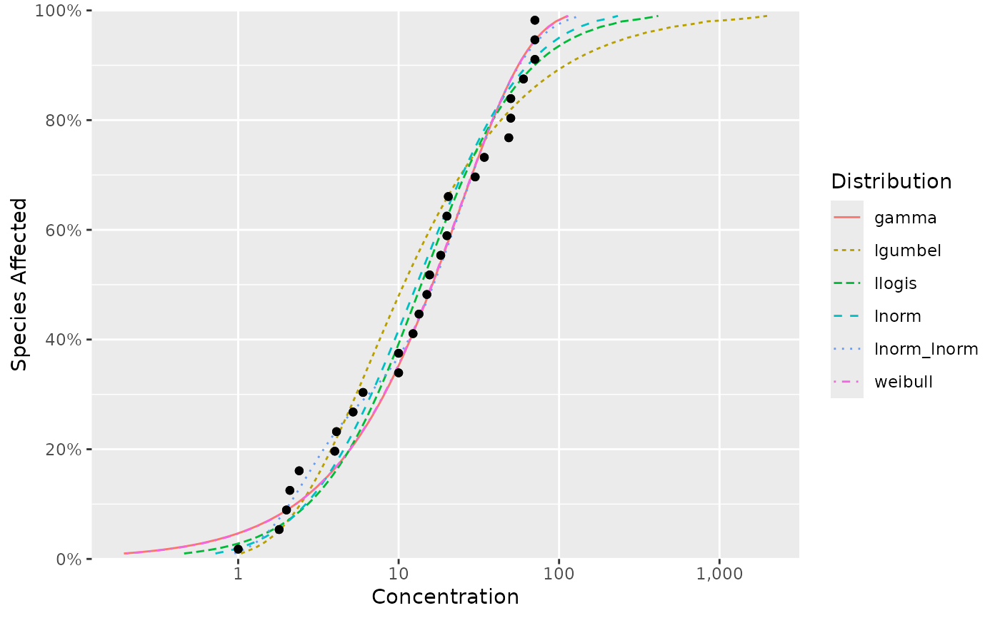

Fits one or more distributions to species sensitivity data.
ssd_fit_dists(
data,
left = "Conc",
right = left,
weight = NULL,
dists = ssd_dists_bcanz(),
nrow = 6L,
rescale = FALSE,
reweight = FALSE,
computable = TRUE,
at_boundary_ok = FALSE,
min_pmix = 0,
range_shape1 = c(0.05, 20),
range_shape2 = range_shape1,
control = list(),
silent = FALSE
)A data frame.
A string of the column in data with the concentrations.
A string of the column in data with the right concentration values.
A string of the numeric column in data with positive weights less than or equal to 1,000 or NULL.
A character vector of the distribution names.
A positive whole number of the minimum number of non-missing rows.
A flag specifying whether to rescale concentration values by dividing by the largest finite value.
A flag specifying whether to reweight weights by dividing by the largest weight.
A flag specifying whether to only return fits with numerically computable standard errors.
A flag specifying whether a model with one or more parameters at the boundary should be considered to have converged (default = FALSE).
A number between 0 and 0.5 specifying the minimum proportion in mixture models.
A numeric vector of length two of the lower and upper bounds for the shape1 parameter.
shape2 parameter.
A list of control parameters passed to stats::optim().
A flag indicating whether fits should fail silently.
An object of class fitdists.
By default the 'llogis', 'gamma' and 'lnorm'
distributions are fitted to the data.
For a complete list of the implemented distributions see ssd_dists_all().
If weight specifies a column in the data frame with positive numbers, weighted estimation occurs. However, currently only the resultant parameter estimates are available.
If the right argument is different to the left argument then the data are considered to be censored.
fits <- ssd_fit_dists(ssddata::ccme_boron)
fits
#> Distribution 'gamma'
#> scale 25.1268
#> shape 0.950179
#>
#> Distribution 'lgumbel'
#> locationlog 1.92263
#> scalelog 1.23224
#>
#> Distribution 'llogis'
#> locationlog 2.62628
#> scalelog 0.740426
#>
#> Distribution 'lnorm'
#> meanlog 2.56164
#> sdlog 1.24154
#>
#> Distribution 'lnorm_lnorm'
#> meanlog1 0.949539
#> meanlog2 3.20109
#> pmix 0.283985
#> sdlog1 0.554545
#> sdlog2 0.768816
#>
#> Distribution 'weibull'
#> scale 23.514
#> shape 0.9661
#>
#> Parameters estimated from 28 rows of data.
ssd_plot_cdf(fits)

ssd_hc(fits)
#> # A tibble: 1 × 10
#> dist percent est se lcl ucl wt method nboot pboot
#> <chr> <dbl> <dbl> <dbl> <dbl> <dbl> <dbl> <chr> <int> <dbl>
#> 1 average 5 1.24 NA NA NA 1 parametric 0 NA